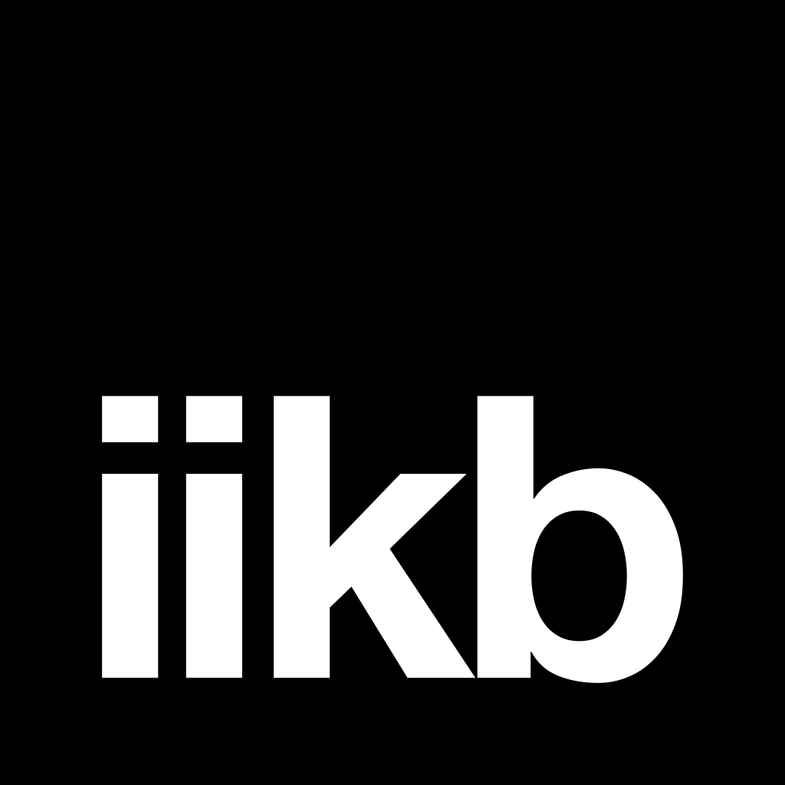
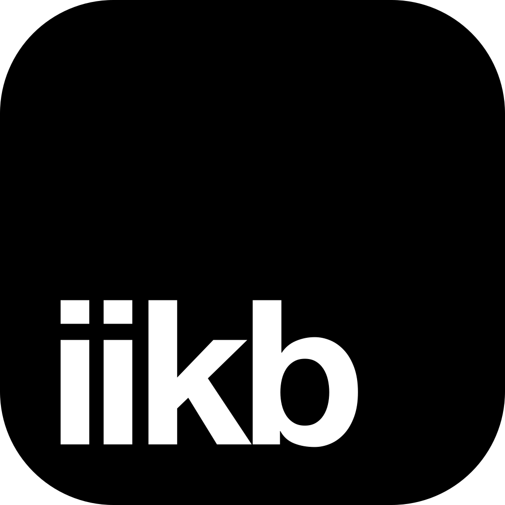
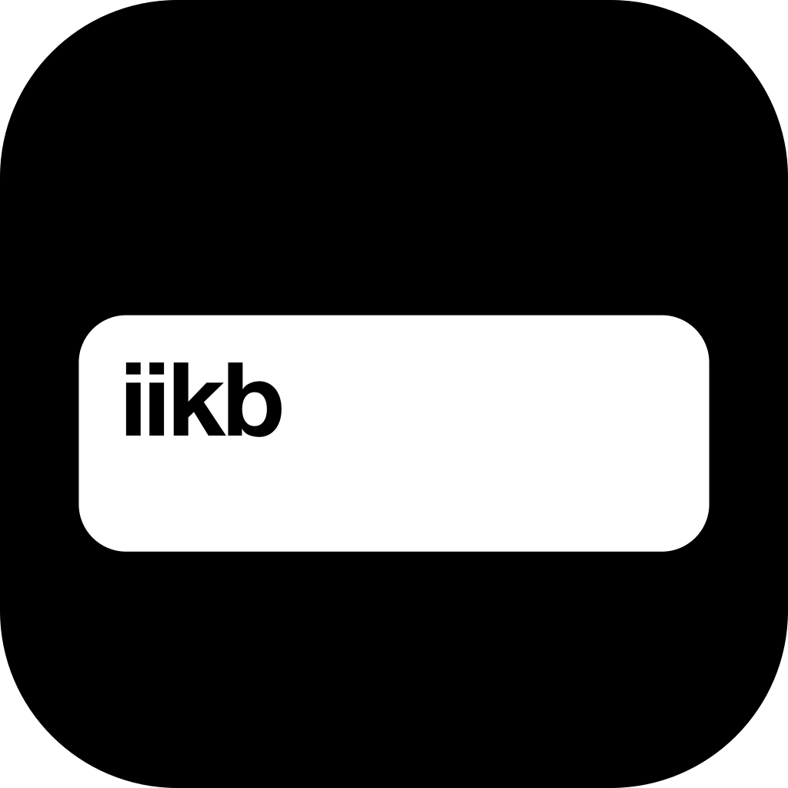

An iPhone keyboard that types like Apple’s and learns where your thumbs land.
Icon

Type: Helvetica Neue
97.6%
It moves with your grip.
Your Taps
Text is Regular at 17. Titles and big numbers are Bold, tracked tight. Rows and controls in the app stay the system font.
Color
Black, white and gray do the work. Red means live. Blue means selected.
page#F2F2F5 · #000
card#FFF · #1C1C1E
ink#000 · #FFF
ink 2#6C6C70 · #8E8E93
red, live#FF3B30 · #FF453A
blue, selected#007AFF · #0A84FF
Link preview
Directions not taken

The name smaller, low on the square. Less presence on the Home Screen.

A space bar with iikb in its corner. Gone below 60px.